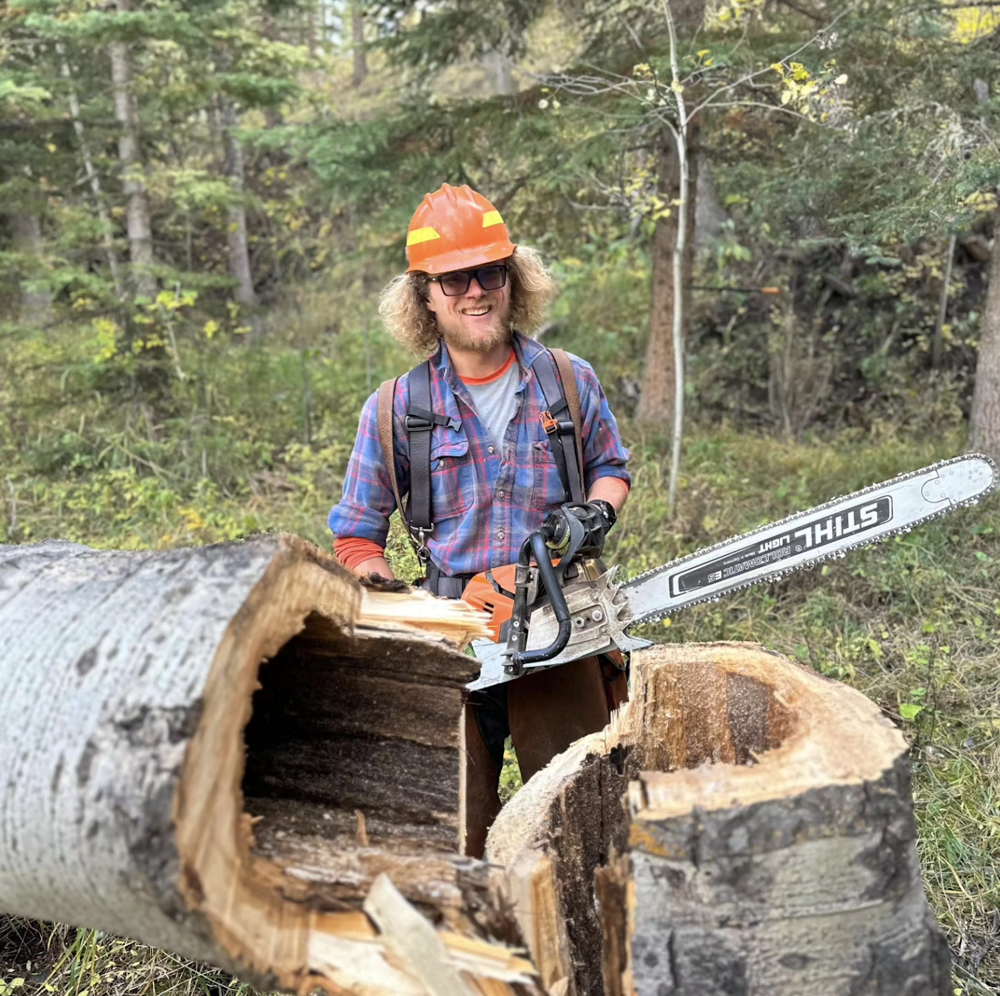
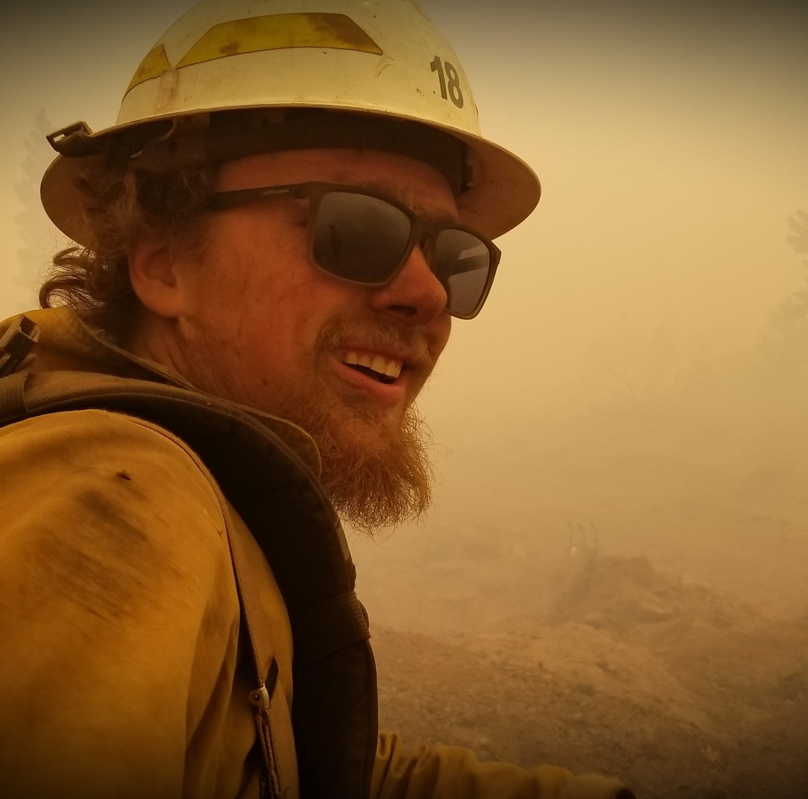
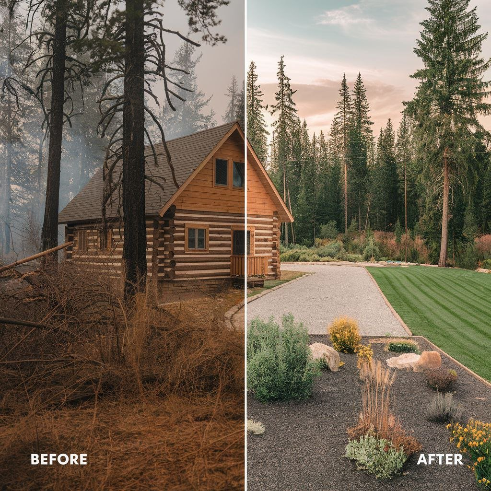

Experienced Leadership
Founded and led by Samuel Givens, a certified wildland firefighter, with over seven years of nationwide wildland firefighting and forest management experience.
At Givens Fire & Forestry LLC, we are more than just a tree service: we are your dedicated partners in creating safe, resilient, and fire-resistant landscapes. Founded by Samuel Givens, a veteran wildland firefighter, our company has grown from a local Montana operation into a regional leader in wildfire mitigation and environmentally conscious land management.
Serving Southwest Montana and the Gallatin Valley, our team brings decades of combined "on-the-line" firefighting experience to every property we service. We specialize in:
Our mission is simple: to empower homeowners with the knowledge and professional services needed to protect their investments while enhancing the natural beauty of Big Sky Country.

Founder & Operator, Montana Division
As the founder of Givens Fire & Forestry LLC, Samuel Givens has built a career centered on a deep commitment to protecting homes and communities from the devastating effects of wildfires. Based in Montana, Samuel brings over seven years of nationwide wildland firefighting experience to the lead of our Montana operations.
Throughout his time on the frontlines, Samuel has served in multiple critical leadership roles, including Incident Commander Type 5 (ICT5), Crew Boss Trainee, and Certified Faller. His intimate understanding of wildfire behavior and forest health was forged in the heat of active fire management, giving him a unique perspective on how to effectively mitigate risk before a fire ever starts.
Samuel's passion extends beyond the field and into education; he is dedicated to empowering homeowners with "fire-smart" strategies and sustainable land management solutions. By combining technical expertise with a lifelong dedication to forestry, Samuel ensures that every project in the Montana division is executed with precision, care, and a focus on long-term environmental resilience.

Founded and led by Samuel Givens, a certified wildland firefighter, with over seven years of nationwide wildland firefighting and forest management experience.
We provide effective and environmentally-friendly solutions that reduce wildfire risk while maintaining the beauty of your property.
We believe in educating our clients, offering personalized consultations, and working within your budget to achieve the best results.
We take at least two forestry courses per year to stay updated on the latest industry best practices and innovative techniques in fire mitigation.
We prioritize sustainability by using low-impact methods and recycling biomass whenever possible.
We've earned the trust of homeowners through consistent, reliable service and a commitment to safety. Our focus is on building lasting relationships by delivering quality work and ensuring peace of mind for every client.

“At Givens Fire & Forestry, our commitment to sustainability is unwavering. We employ low-impact methods and recycle biomass whenever feasible. Adhering strictly to all Stream Management Zone (SMZ) regulations, we ensure the use of appropriate bar oil and take necessary precautions to preserve stream and river ecosystems. Forest health remains one of our top priorities, and we show the utmost respect for riparian zones, recognizing their delicate role within the ecosystem.”

Our values are centered on safety, sustainability, education, and integrity. We prioritize protecting your home, preserving the environment, empowering you with knowledge, and always acting with transparency and honesty in every service we provide.